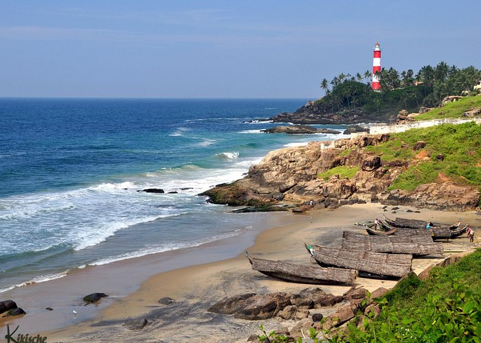
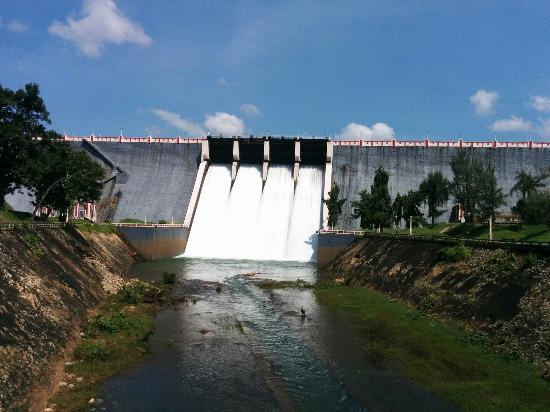

THIRUVANANTHAPURAM
Thiruvananthapuram is a major tourist hub in India. Kovalam and Varkala are popular beach towns near the city. Other important beaches include Poovar, Shankumugham Beach, Azhimala Beach, Vizhinjam Beach and Veli Beach. The Padmanabhaswamy Temple located at the heart of the city is known as the richest place of worship in the world. Other places of interest include Agasthyamala rain forests, Neyyar Wildlife Sanctuary, Kallar, Braemore, Ponmudi hills, Poovar, Anchuthengu backwaters, Varkala Cliffs and Kappil-Edava lakes.
The city is also known for its unique style of architecture involving Kerala Architecture with British and Dravidian influences.Napier museum, Zoo, Padmanabha Swamy temple, Kuthira Malika palace, Kilimanoor palace and The Trivandrum Golf Club heritage building are examples for this.

Kovalam beach
It is located at a distance of 16 km from Thiruvananthapuram Central Railway Station and about 10 km from Thiruvananthapuram International Airport. It has a long coastline with substantial palm, a lighthouse, and clear waters, which makes it the main attraction of tourists in Trivandrum. There are three beaches separated by rocky projection in its 17 KM long coastline, known as Light House Beach, Hawah Beach, and Samudra Beach.

Neyyar Dam
Neyyer Dam is situated at about 30 KMs from Trivandrum on the foothills of the Western Ghat across Neyyer River. The dam is a famous picnic spot providing a beautiful view of slopes, meadows, flora, and fauna. It is a part of Neyyer Wildlife Sanctuary which is a habitat for various species of wild animals.Some of the attractions at Neyyer Dam are Yoga Centre, Crocodile Park set up for research and rehabilitation, Lion Safari Park, Dear Park, Watch Tower, and Boating.
Poovar Island
Poovar the beautiful village on the southern tip of Trivandrum is a fishing village. In earlier times it was a trading port for spice, timber, sandal, and ivory. The only means to reach Poovar Island is through the water. It is an unexplored island surrounded by calm and quiet backwaters and sea. Poovar Island is situated at a point where the river and lake meet the grand Arabian sea. This meeting point of river, lake, and ocean present an impressive look and attract tourists.